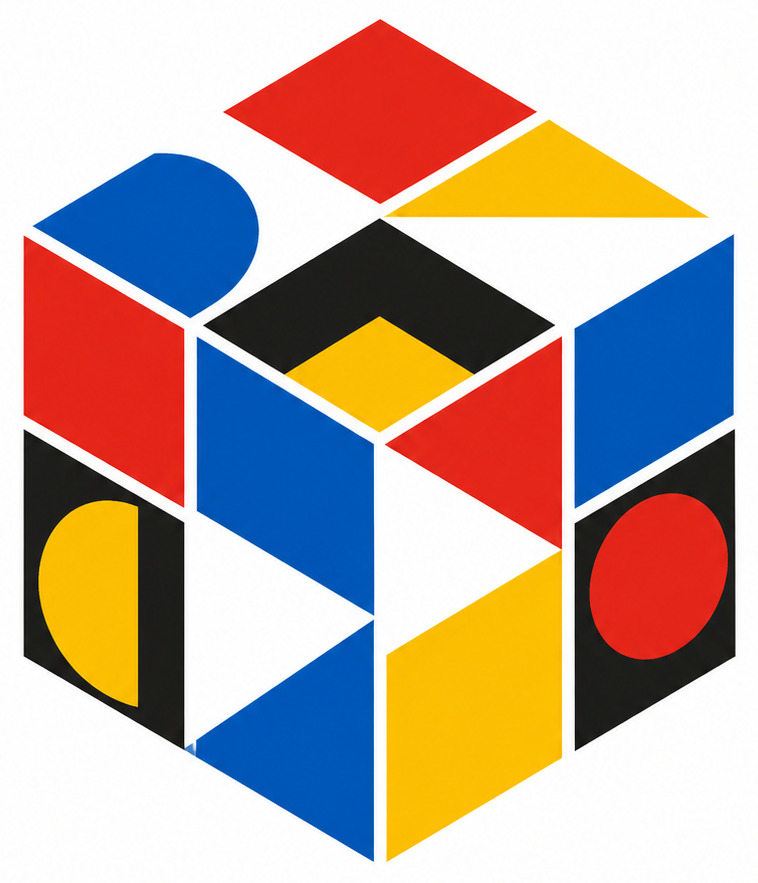

键盘：U D L R F B（Shift = 反向）· 空格打乱 · Esc 还原
这里摆着几件工具，还有更多空位。左边的魔方可以把玩，鼠标离开魔方就会散开，反之聚合。 右上角的开关在 Soft UI 和 Liquid Glass 之间切换，两种风格都按 1:1 复刻。
拖动魔方 · 切换风格 · 选一个工具开始
仅在浏览器产生真实操作后计入，常见爬虫与自动化访问不会增加数字。
从顶部导航选择「游戏」或「工具箱」开始探索